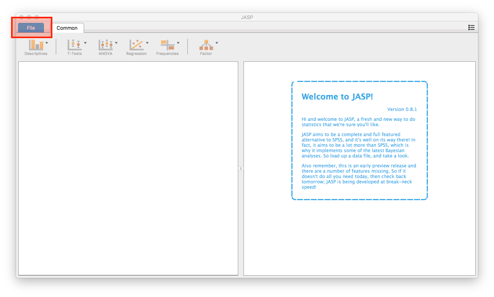
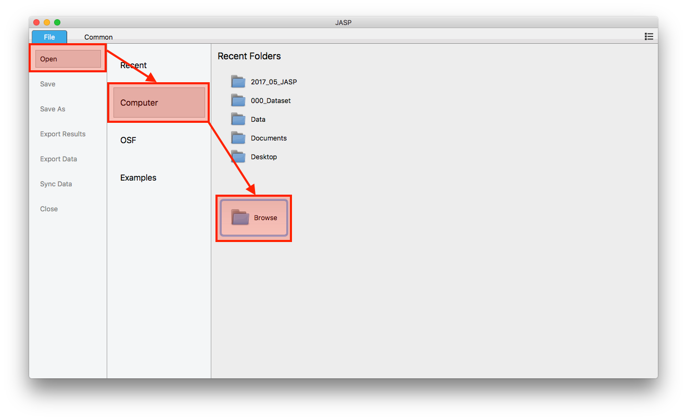
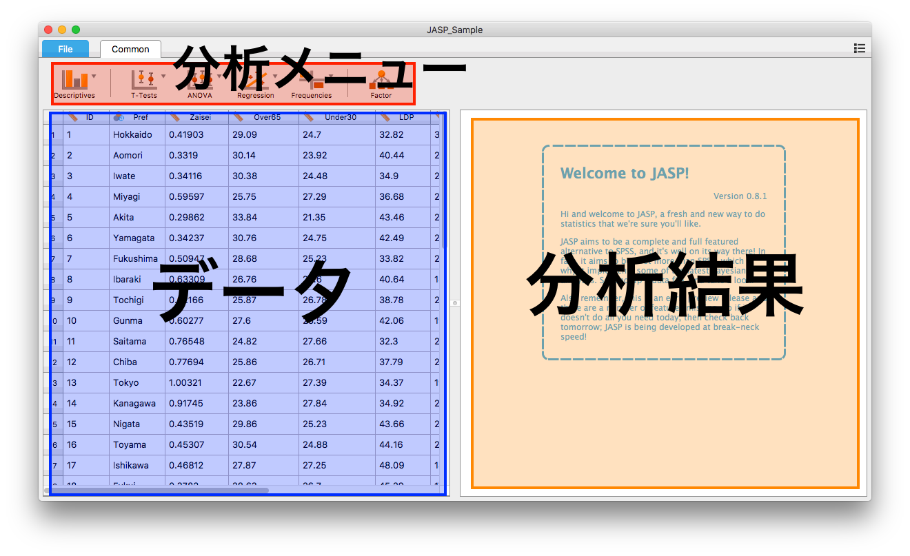

-
実習用データセットをダウンロードしておきます。
-
JASPを起動します。

-
これがJASPの画面です。SPSSなどに比べればかなりシンプルですね。出来る分析もSPSSに比べて貧弱ですが、入門のデータ分析講義で扱う分析手法はほとんど可能です。
-
まず、先ほどダウンロードしたファイルを開きましょう。画面左上の「File」をクリックします。

-
既に「Open」は選択されていると思いますが、続いて「Computer」をクリックし、最後に「Browse」をクリック。
-
ファイルが選択できるダイアログボックスが表示されますね。そこで先ほどダウンロードしたJASP_Sample.csvを選択し、開きます。

-
JASPは大きく分けて3つの領域で構成されています。
- 分析メニュー：記述統計、t検定、ANOVA、…など様々な分析手法を選択するメニューです。
- データ：現在、開いているデータが表示されます。現在のJASP (Ver. 0.8.8.1)では、データ領域で中身を修正することはできません。中身をクリックするとExcelやLibreOfficeなどのスプレッドシートのソフトが起動されます。
- 分析結果：今は何も表示されていませんが、これから何らかの分析をすると分析結果が表示されます。
-
※注意※: JASPは日本語が含まれているデータセットの読み込みが可能です。しかし、分析結果には日本語が表示されません。したがって、データセットは事前に日本語を英語に書き換えておく必要があります。
-
結果の保存などについては今度の講義で説明します。まずは、データを開くことができたらOKです。